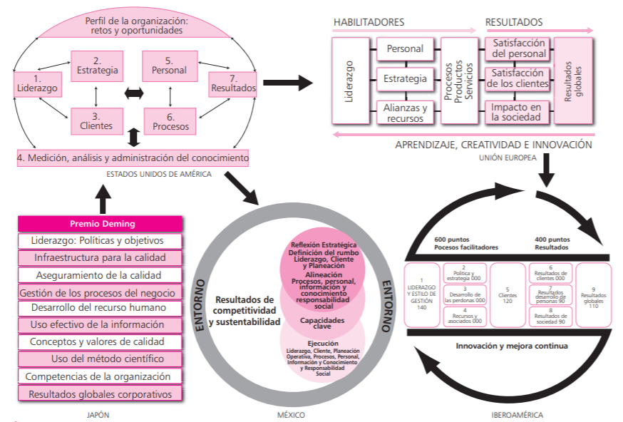
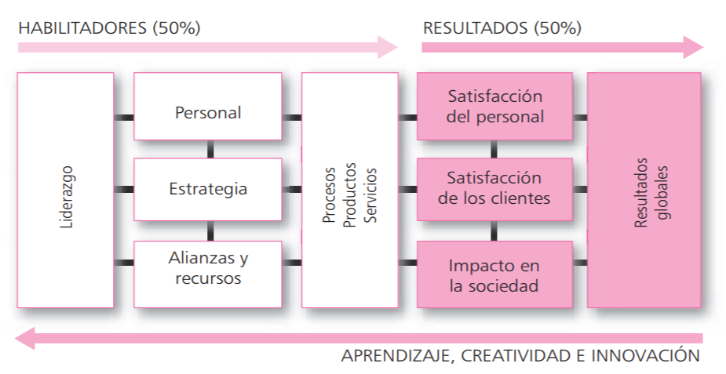

Tarea 2
Modelos de excelencia
Investigue y elabore un informe académico sobre Los Modelos de excelencia. Libro Cantú, H (2011). Desarrollo de una cultura de calidad. Modelos de excelencia. (p. 234-253).
Los modelos de gestión por calidad total que promueven los premios de calidad, también conocidos como modelos de excelencia, son instrumentos que permiten acelerar el proceso de cambio cultural en las organizaciones y constituyen una guía para lograr el mejoramiento continuo de las empresas. En el corto plazo son un reconocimiento a quienes tuvieron la visión y perseverancia necesarias para avanzar en el camino de la calidad, además de premiar su esfuerzo, difundir sus éxitos y señalar los modelos a seguir. En el mediano y largo plazos, los premios se convierten en el objetivo principal del esfuerzo nacional para mejorar la calidad, la competitividad y la sustentabilidad de las organizaciones.
Premio Deming
El Premio Deming fue el primer reconocimiento en su género y se instauró a fin de destacar la labor de individuos y organizaciones que han demostrado un nivel sostenido en la práctica del control total de calidad. Se entrega en tres categorías: a individuos, a la aplicación (concedido a organizaciones de cualquier tipo) y a la fábrica (para plantas manufactureras). El Premio Deming para organizaciones evalúa 10 áreas que abarcan todo el sistema administrativo de la empresa:
Premio Nacional de Calidad de México
El Premio Nacional de Calidad (fttp://www.competitividad.org.mx) fue creado por el gobierno federal en conjunto con el sector privado a fin de fomentar mayor competitividad de las organizaciones mexicanas y reconocer los esfuerzos que han realizado para implantar procesos de calidad total. Este premio es otorgado por el presidente de la República a organizaciones ejemplares en la aplicación de procesos de mejora continua en la calidad total. El modelo utilizado inicialmente por el Premio Nacional de Calidad se desarrolló a partir del modelo del Premio Malcolm Baldrige de Estados Unidos; sin embargo, su versión más reciente (2008) cuenta con un enfoque más amplio, el cual busca que las organizaciones vayan más allá del control y el mejoramiento continuo de sus procesos para satisfacción de sus mercados y clientes; además, promueve que las organizaciones mejoren su posicionamiento competitivo y aseguren su sustentabilidad a partir de una reflexión estratégica que detecte los retos y oportunidades que enfrenta ahora la organización y lo hará en el futuro. El modelo nacional para la competitividad organizacional, como se le llama a partir de la versión 2008, tiene como objetivos:
- a) Promover una cultura basada en los principios del modelo nacional para la competitividad organizacional.
- b) Propiciar la efectividad de las organizaciones mexicanas en la creación de valor para todos sus grupos de interés, en especial para sus clientes y mercados.
- c) Mejorar la capacidad de las organizaciones para competir exitosamente en los mercados mundiales.
- d) Promover el aprendizaje y la autoevaluación.
- e) Favorecer un efecto multiplicador a partir del intercambio de las mejores prácticas.
Premio Malcolm Baldrige (Estados Unidos)
Este reconocimiento fue el resultado de un proceso de consulta al que convocó el ex presidente Ronald Reagan en 1982, con el propósito de analizar el declive en la productividad de las empresas de Estados Unidos. Con base en dicha consulta, un comité recomendó crear un premio nacional de calidad, semejante al Premio Deming en Japón, para reconocer a las empresas que establecieran y cumpliesen exitosamente los requisitos del premio. Este reconocimiento se instituyó en agosto de 1987 con el nombre de Premio Malcolm Baldrige, en honor a quien fuera secretario de comercio de Estados Unidos y que falleció en un trágico accidente poco antes de que el Senado aprobara la ley relacionada con este premio. Los objetivos del Premio Malcolm Baldrige son los siguientes:
- a) Estimular a las empresas a mejorar su productividad y su calidad mediante el reconocimiento, además del consecuente logro de mejores resultados financieros.
- b) Divulgar entre las empresas el enfoque de calidad mediante el ejemplo de las empresas ganadoras del reconocimiento.
- c) Establecer lineamientos y criterios que sirvan como guía a las empresas interesadas en aplicar modelos de calidad y productividad que incrementen su nivel de competitividad.
- d) Poner a disposición de las empresas interesadas la información relacionada con los modelos de calidad de las que resulten ganadoras.
Premio de la Fundación Europea para la Calidad Total (EFQM)
El Premio Europeo a la Calidad, introducido en 1991, se basa en el modelo de calidad total de la EFQM (European Foundation for Quality Management). Sin embargo, su desarrollo se fundamentó en el Premio Deming de Japón y en el Malcolm Baldrige de Estados Unidos. Este modelo, que cuenta con nueve criterios que posteriormente serán descritos, se representa de manera gráfica en la figura
Premio Iberoamericano a la Calidad
Este premio fue creado por los países que participan en la Cumbre
Iberoamericana que se realiza cada
año. Su objetivo es contribuir a distinguir, destacar, explicar y reconocer la
calidad de las organizaciones premiadas en el ámbito iberoamericano e
internacional. Se presentan empresas de Argentina,
Bolivia, Brasil, Colombia, Costa Rica, Cuba, Chile, Ecuador, El Salvador,
España, Guatemala, Honduras, México, Nicaragua, Panamá, Perú, Portugal,
República Dominicana, Uruguay y Venezuela, que
compiten en seis modalidades, según la titularidad de
la organización (pública o privada) y el tamaño (pequeña, mediana o grande).
El proceso de selección de las empresas premiadas
se desarrolla en tres fases. En la primera se procede a
integrar un equipo internacional de evaluadores, a
analizar el informe presentado por las empresas de
acuerdo con el modelo iberoamericano de excelencia
en la gestión y a valorar (en una escala de 0 a 1 000
puntos) a las empresas presentadas.
En la segunda fase, las empresas que han pasado
el filtro reciben la visita de un equipo de evaluación,
que emite un informe de resultados. En la tercera fase,
el jurado, constituido por personalidades relevantes de
la dirección de empresas y del mundo académico y
profesional, estudia toda la información recabada y
decide quiénes son los ganadores en cada modalidad.
Su modelo es prácticamente igual al del Premio
Europeo a la Calidad, por lo que sólo se presentará el
modelo gráfico pues el detalle se explicó en la sección
anterior.